2017/1/31
第１回子ども向けプログラミング道場を開催しました。
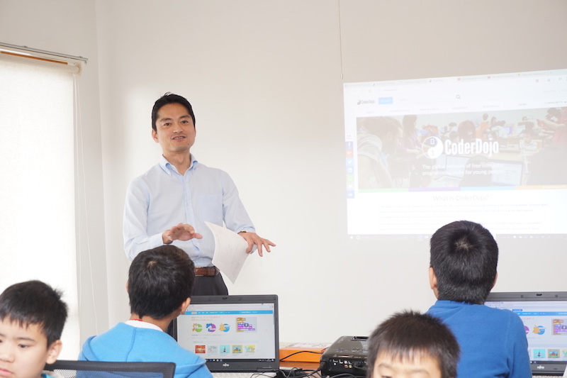
第1回目は地元を中心に多くの子供たちが参加し、Scratch（スクラッチ）を使ったプログラミングやHour of codeに取り組みました。
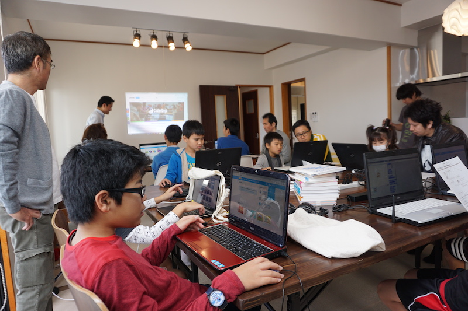
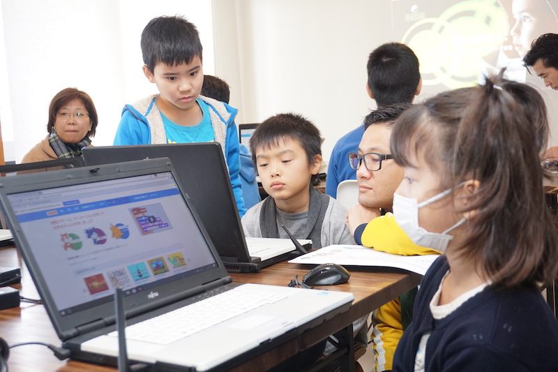
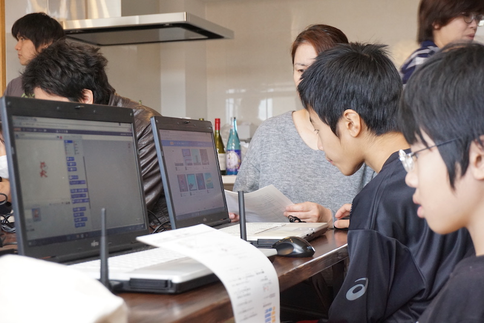
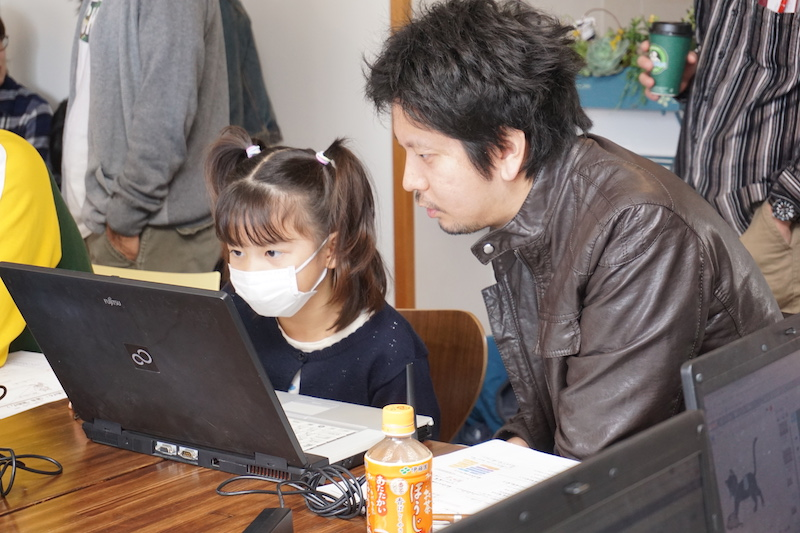
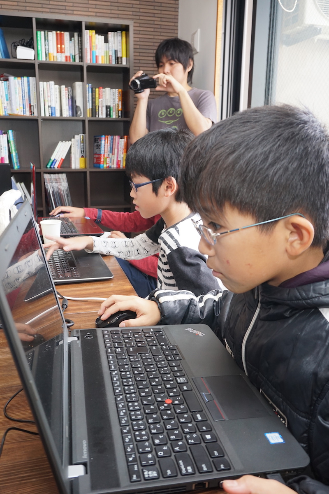
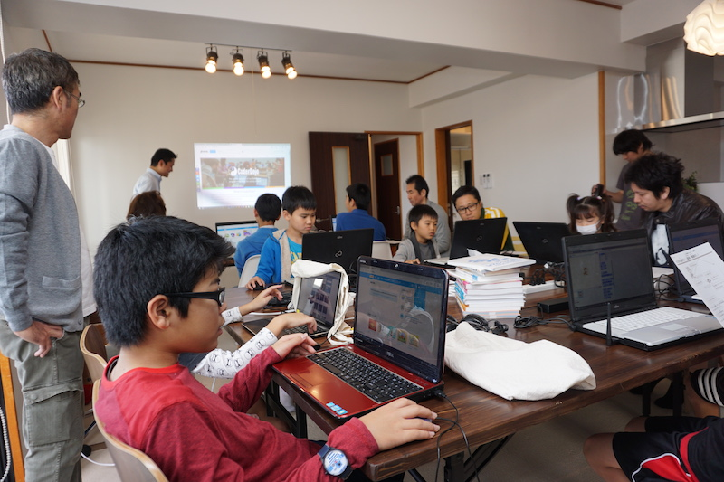
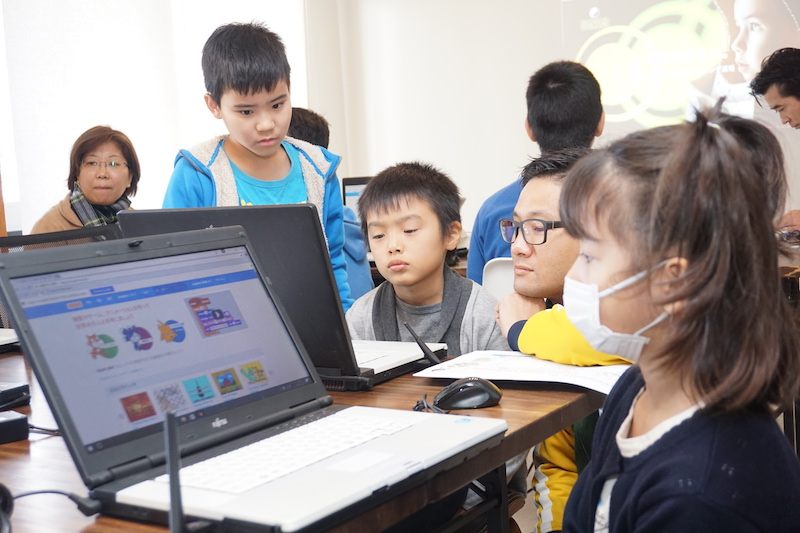
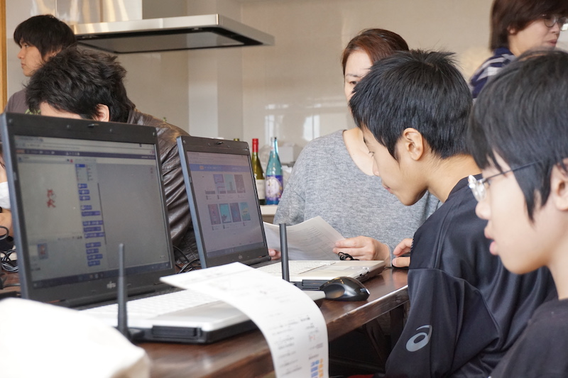
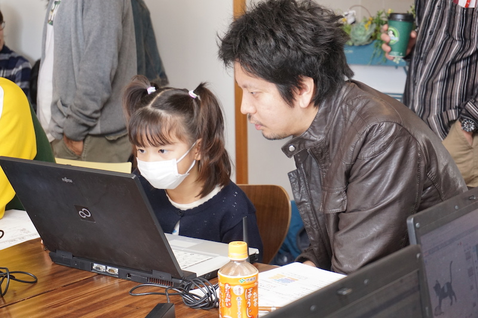
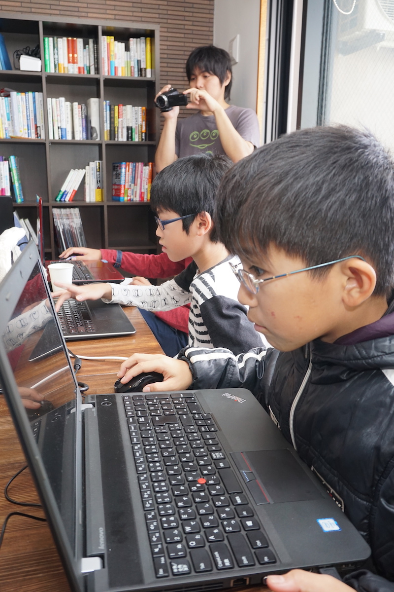
今回全く経験の無い子供たちや、慣れていない子供たち向けに利用した教材は、日本でCoderDojoを立ち上げられた安川さんに紹介頂いた通称「ネコ逃げ」です。
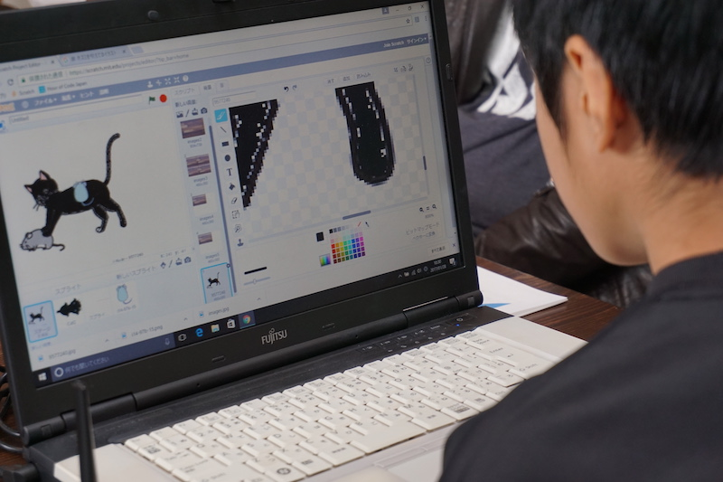
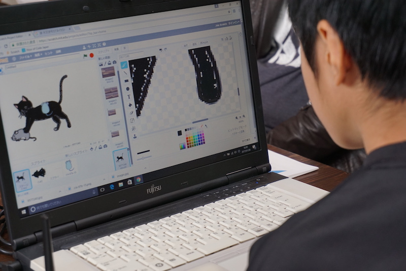
また、初めての開催にあたってはCoderDojo Japan（下北沢）の運営を見学させて頂き、参考にいたしました。ありがとうございました。
第2回目は2月4日（土）9:30 - 12:00に開催で参加募集中です。既に何人か申し込みも頂いています。次回は話題の「hololens（ホロレンズ）」体験会も予定しています。お申込みはFacebookイベントか、DoorKeeperページからどうぞ！